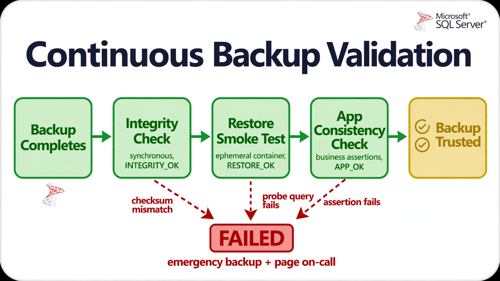

Chapter 12: Autonomous Backup & Restore Systems
Backup and restore have traditionally been the most human-dependent operations in database management — schedules set manually, retention policies enforced inconsistently, restore testing performed quarterly at best, and recovery procedures that exist as PDF documents nobody updates. An autonomous backup system inverts this entirely: it observes the database's change rate, transaction patterns, and business criticality in real time; decides what to back up, how frequently, and to which tiers of storage; executes and validates those backups without operator input; and can initiate restore operations — including full environment reconstruction — based on defined policy or detected corruption. This chapter covers the full architecture of autonomous backup systems: decision logic for adaptive scheduling, continuous validation pipelines, policy-driven restore automation, and the operational patterns that make these systems production-safe at scale.
Adaptive Backup Scheduling Based on Change Velocity
Static backup schedules are an artifact of the manual era. A database that processes 500 transactions per hour at 2 AM and 50,000 transactions per hour at noon has a fundamentally different RPO risk profile across those windows, yet most organizations apply a uniform schedule to both. An autonomous system observes write velocity continuously and adjusts backup frequency accordingly.
The core metric is modified page rate and log generation rate. Both serve as proxies for how quickly the database is diverging from its last known-good backup. When the divergence rate is high, the cost of data loss per unit time is proportionally high, and backup frequency should increase. When the database is quiescent, backup frequency can safely decrease to preserve storage and I/O budget.
-- Track modified extent rate using dm_io_virtual_file_stats
-- Proxy for change velocity per database
SELECT
DB_NAME(vfs.database_id) AS database_name,
SUM(vfs.io_stall_write_ms) AS write_stall_ms,
SUM(vfs.num_of_bytes_written) AS bytes_written,
SUM(vfs.num_of_writes) AS write_ops,
CASE
WHEN SUM(vfs.num_of_bytes_written) > 5368709120 THEN 'HIGH'
WHEN SUM(vfs.num_of_bytes_written) > 1073741824 THEN 'MEDIUM'
WHEN SUM(vfs.num_of_bytes_written) > 104857600 THEN 'LOW'
ELSE 'QUIESCENT'
END AS velocity_band,
GETUTCDATE() AS sampled_at
FROM sys.dm_io_virtual_file_stats(NULL, NULL) vfs
GROUP BY vfs.database_id
ORDER BY bytes_written DESC;The scheduler agent consumes this velocity data and maps it to a backup tier decision table:
| Velocity Band | Full Backup | Incremental / Differential | Log Backup |
|---|---|---|---|
| HIGH | Weekly | Every 2 hours | Every 5 minutes |
| MEDIUM | Weekly | Every 6 hours | Every 15 minutes |
| LOW | Weekly | Daily | Every 30 minutes |
| QUIESCENT | Bi-weekly | Weekly | Hourly |
This table is not static configuration — the scheduler agent recalculates it against observed RPO breach probability. If a HIGH-velocity period has been sustained for more than four hours (suggesting a bulk load or migration rather than a transient spike), the scheduler may promote to a more aggressive log backup cadence or trigger an opportunistic incremental.
The Python scheduler that drives this loop runs as a Kubernetes CronJob with a 1-minute resolution. It reads the velocity band, compares against the last backup timestamp for each tier, and emits backup jobs to a task queue:
import pyodbc
import redis
import json
from datetime import datetime, timezone, timedelta
from dataclasses import dataclass, asdict
from enum import Enum
class VelocityBand(Enum):
HIGH = "HIGH"
MEDIUM = "MEDIUM"
LOW = "LOW"
QUIESCENT = "QUIESCENT"
@dataclass
class BackupDecision:
database: str
backup_type: str # full | incremental | log
priority: int # 1=immediate, 2=scheduled, 3=deferred
reason: str
triggered_at: str
POLICY = {
VelocityBand.HIGH: {"log_interval_min": 5, "incr_interval_hr": 2},
VelocityBand.MEDIUM: {"log_interval_min": 15, "incr_interval_hr": 6},
VelocityBand.LOW: {"log_interval_min": 30, "incr_interval_hr": 24},
VelocityBand.QUIESCENT: {"log_interval_min": 60, "incr_interval_hr": 168},
}
def get_velocity_band(conn, database: str) -> VelocityBand:
with conn.cursor() as cur:
cur.execute(
"""
SELECT TOP 1 velocity_band FROM backup_monitor.log_velocity
WHERE recorded_at > DATEADD(MINUTE, -10, SYSUTCDATETIME())
ORDER BY recorded_at DESC
"""
)
row = cur.fetchone()
return VelocityBand(row[0]) if row else VelocityBand.QUIESCENT
def get_last_backup_time(redis_client, database: str, backup_type: str) -> datetime:
key = f"backup:last:{database}:{backup_type}"
val = redis_client.get(key)
if val:
return datetime.fromisoformat(val.decode())
return datetime.min.replace(tzinfo=timezone.utc)
def evaluate_backup_need(
database: str,
band: VelocityBand,
last_log: datetime,
last_incr: datetime,
) -> list[BackupDecision]:
decisions = []
policy = POLICY[band]
now = datetime.now(timezone.utc)
if (now - last_log) > timedelta(minutes=policy["log_interval_min"]):
decisions.append(BackupDecision(
database=database,
backup_type="log",
priority=1 if band == VelocityBand.HIGH else 2,
reason=f"Log interval exceeded for band {band.value}",
triggered_at=now.isoformat(),
))
if (now - last_incr) > timedelta(hours=policy["incr_interval_hr"]):
decisions.append(BackupDecision(
database=database,
backup_type="incremental",
priority=2,
reason=f"Incremental interval exceeded for band {band.value}",
triggered_at=now.isoformat(),
))
return decisions
def run_scheduler(mssql_dsn: str, redis_url: str, databases: list[str]):
conn = pyodbc.connect(mssql_dsn)
r = redis.from_url(redis_url)
queue = r.pipeline()
for db in databases:
band = get_velocity_band(conn, db)
last_log = get_last_backup_time(r, db, "log")
last_incr = get_last_backup_time(r, db, "incremental")
decisions = evaluate_backup_need(db, band, last_log, last_incr)
for decision in decisions:
queue.rpush("backup:jobs", json.dumps(asdict(decision)))
queue.execute()
conn.close()This loop runs on a 1-minute Kubernetes CronJob schedule. The actual backup execution is decoupled into a separate worker pool, allowing the scheduler to remain lightweight and the backup workers to scale independently under load.
Continuous Backup Validation Without Human Review
A backup that has never been tested is not a backup — it is a hope. Most organizations test restore capability infrequently because the process requires human coordination: spin up a test environment, restore, verify, tear down. An autonomous system eliminates that coordination dependency entirely by running a continuous validation pipeline in the background, generating an auditable truth record of every backup's restorability.
The validation pipeline has three stages:
1. Structural integrity check — immediately after backup completion, verify that the backup files are not corrupted and that the catalog metadata is consistent.
2. Restore smoke test — periodically, restore the backup to an isolated environment (a throwaway container or VM) and run a lightweight probe query suite to confirm the data is readable and internally consistent.
3. Application-level consistency check — run a set of business logic assertions against the restored database to confirm that referential integrity, row counts in key tables, and sequence values are within expected bounds.
The first stage runs synchronously after every backup. The second and third stages run asynchronously in a dedicated validation namespace in Kubernetes.

Figure 12.1 is the gauntlet every backup runs before it earns the word ‘trusted’. The green pipeline is strictly ordered: the structural integrity check runs synchronously right after the backup completes, then a restore smoke test actually boots the backup in an ephemeral container, and finally application-level business assertions confirm the data is meaningful — not just readable. Each stage writes its verdict to the catalog, so trust is auditable, not assumed. The red path below is equally important: a checksum mismatch, a failed probe query, or a failed assertion doesn’t just mark the backup bad — it triggers an emergency backup and pages the on-call, because an untrusted backup is an incident, not a statistic.
*The three-stage validation pipeline: each backup advances through synchronous integrity checking and two asynchronous restore-based checks before it is trusted for use in a restore plan.*
-- SQL Server backup validation catalog
-- Track RESTORE VERIFYONLY results and restore smoke test outcomes
CREATE TABLE backup_catalog.BackupValidations (
ValidationId UNIQUEIDENTIFIER DEFAULT NEWSEQUENTIALID() PRIMARY KEY,
BackupSetId INT NOT NULL, -- from msdb.dbo.backupset
DatabaseName SYSNAME NOT NULL,
BackupType VARCHAR(20) NOT NULL, -- Full | Differential | Log
BackupStartDate DATETIME2 NOT NULL,
BackupFinishDate DATETIME2 NOT NULL,
PhysicalDeviceName NVARCHAR(512) NOT NULL,
ValidationState VARCHAR(20) NOT NULL DEFAULT 'PENDING',
VerifyOnly_Passed BIT NULL,
RestoreSmoke_Passed BIT NULL,
AppConsistency_Passed BIT NULL,
ValidatedAt DATETIME2 NULL,
ValidationMessage NVARCHAR(MAX) NULL
);
-- Populate from msdb on backup completion (called by SQL Agent job)
INSERT INTO backup_catalog.BackupValidations (
BackupSetId, DatabaseName, BackupType,
BackupStartDate, BackupFinishDate, PhysicalDeviceName
)
SELECT
bs.backup_set_id,
bs.database_name,
CASE bs.type
WHEN 'D' THEN 'Full'
WHEN 'I' THEN 'Differential'
WHEN 'L' THEN 'Log'
END,
bs.backup_start_date,
bs.backup_finish_date,
bmf.physical_device_name
FROM msdb.dbo.backupset bs
JOIN msdb.dbo.backupmediafamily bmf
ON bs.media_set_id = bmf.media_set_id
WHERE bs.backup_finish_date > DATEADD(MINUTE, -5, GETUTCDATE())
AND bs.database_name = @DatabaseName;The restore smoke test uses ephemeral containers managed by a Kubernetes operator. The operator watches the backup_catalog.backups table (or its SQL Server equivalent) for entries in INTEGRITY_OK state and schedules a restore pod:
import subprocess
import pyodbc
import logging
logger = logging.getLogger("backup_validator")
SMOKE_TEST_QUERIES = [
# Verify system catalog is readable
"SELECT COUNT(*) FROM sys.tables;",
# Verify physical stats are readable (catches page-level corruption)
"SELECT COUNT(*) FROM sys.dm_db_index_physical_stats(DB_ID(), NULL, NULL, NULL, 'LIMITED');",
# Verify user data is present
"SELECT SUM(row_count) FROM sys.dm_db_partition_stats WHERE index_id IN (0, 1);",
]
# Host of the ephemeral SQL Server used for restore validation
# (containerized instance managed by the Kubernetes operator)
EPHEMERAL_SQL_HOST = "sql-verify.default.svc.cluster.local"
def restore_to_ephemeral(backup_path: str, verify_db: str) -> bool:
"""Restore a native backup to an ephemeral SQL Server database, then CHECKDB it."""
result = subprocess.run(
[
"sqlcmd", "-S", EPHEMERAL_SQL_HOST, "-E", "-b",
"-Q",
f"RESTORE DATABASE [{verify_db}] FROM DISK = N'{backup_path}' "
f"WITH MOVE 'data' TO '/var/opt/mssql/data/{verify_db}.mdf', "
f"MOVE 'log' TO '/var/opt/mssql/data/{verify_db}_log.ldf', "
"REPLACE, STATS = 10;",
],
capture_output=True,
text=True,
timeout=900,
)
if result.returncode != 0:
logger.error("Restore failed: %s", result.stderr)
return False
# DBCC CHECKDB catches page-level corruption the smoke tests cannot see
dbcc = subprocess.run(
["sqlcmd", "-S", EPHEMERAL_SQL_HOST, "-E", "-b",
"-Q", f"DBCC CHECKDB ([{verify_db}]) WITH NO_INFOMSGS;"],
capture_output=True,
text=True,
timeout=900,
)
if dbcc.returncode != 0:
logger.error("CHECKDB failed: %s", dbcc.stderr)
return dbcc.returncode == 0
def run_smoke_tests(verify_db: str, database: str) -> tuple[bool, str]:
"""Execute smoke test queries against the restored database."""
try:
conn = pyodbc.connect(
"DRIVER={ODBC Driver 18 for SQL Server};"
f"SERVER={EPHEMERAL_SQL_HOST};DATABASE={verify_db};"
"Trusted_Connection=yes;",
timeout=10,
)
with conn.cursor() as cur:
for query in SMOKE_TEST_QUERIES:
cur.execute(query)
result = cur.fetchone()
if result is None or result[0] == 0:
return False, f"Smoke test failed: zero rows from [{query}]"
conn.close()
return True, "All smoke tests passed"
except Exception as e:
return False, f"Connection or query error: {e}"
def drop_ephemeral(verify_db: str):
subprocess.run(
["sqlcmd", "-S", EPHEMERAL_SQL_HOST, "-E", "-b",
"-Q", f"ALTER DATABASE [{verify_db}] SET SINGLE_USER WITH ROLLBACK IMMEDIATE; "
f"DROP DATABASE [{verify_db}];"],
capture_output=True,
timeout=300,
)
def validate_backup(backup_id: str, backup_path: str, database: str,
catalog_dsn: str):
verify_db = f"{database}_verify_{backup_id[:8]}"
try:
restored = restore_to_ephemeral(backup_path, verify_db)
if not restored:
_update_catalog(catalog_dsn, backup_id, "FAILED", "Restore failed")
return
passed, message = run_smoke_tests(verify_db, database)
state = "RESTORE_OK" if passed else "FAILED"
_update_catalog(catalog_dsn, backup_id, state, message)
finally:
drop_ephemeral(verify_db)
def _update_catalog(dsn: str, backup_id: str, state: str, message: str):
conn = pyodbc.connect(dsn)
with conn.cursor() as cur:
cur.execute(
"""
UPDATE backup_catalog.backups
SET validation_state = ?,
validation_message = ?,
validated_at = SYSUTCDATETIME()
WHERE backup_id = ?
""",
(state, message, backup_id),
)
conn.commit()
conn.close()When a backup fails validation, the system does not simply log the failure. It immediately triggers a fresh backup of the same type, alerts the on-call channel through PagerDuty or Alertmanager, and suppresses all automated restore operations that would have consumed the failed backup. The decision tree is: if validation_state = 'FAILED' and backup_type = 'full', trigger emergency full backup and page; if backup_type = 'log', trigger log backup retry and record the gap in the catalog for PITR range invalidation.
Policy-Driven Retention and Tiered Storage Lifecycle
Retention management is where backup systems accumulate the most hidden cost and compliance risk simultaneously. Organizations over-retain backups on expensive primary storage because the rules for deletion are unclear or the deletion process requires human approval. An autonomous system encodes retention policy as machine-executable rules and enforces them on a continuous basis.
Retention policy in an autonomous system has four dimensions:
The storage lifecycle manager evaluates each backup against all four dimensions. A backup is eligible for deletion only when it fails all four retention tests. The tier migration logic runs separately: backups older than 7 days move from NVMe-backed primary storage to object storage (S3, Azure Blob, or GCS); backups older than 30 days move to archive storage classes (Glacier, Archive).
-- SQL Server: identify backup sets eligible for deletion
-- Respects time, count, and log chain continuity constraints
WITH RetentionPolicy AS (
SELECT
retain_days = 30,
retain_full_count = 4,
pitr_window_hours = 72
),
BackupRanked AS (
SELECT
bs.backup_set_id,
bs.database_name,
bs.backup_start_date,
bs.backup_finish_date,
bs.type AS backup_type,
bmf.physical_device_name,
ROW_NUMBER() OVER (
PARTITION BY bs.database_name, bs.type
ORDER BY bs.backup_finish_date DESC
) AS recency_rank
FROM msdb.dbo.backupset bs
JOIN msdb.dbo.backupmediafamily bmf
ON bs.media_set_id = bmf.media_set_id
WHERE bs.database_name = @DatabaseName
AND bs.is_copy_only = 0
),
RetentionDecisions AS (
SELECT
br.*,
CASE
WHEN br.backup_finish_date > DATEADD(
DAY, -rp.retain_days, GETUTCDATE()
) THEN 'RETAINED_TIME'
WHEN br.recency_rank <= rp.retain_full_count THEN 'RETAINED_COUNT'
WHEN br.backup_type = 'L'
AND br.backup_finish_date > DATEADD(
HOUR, -rp.pitr_window_hours, GETUTCDATE()
) THEN 'RETAINED_PITR'
ELSE 'ELIGIBLE_FOR_DELETION'
END AS RetentionDecision
FROM BackupRanked br
CROSS JOIN RetentionPolicy rp
)
SELECT
backup_set_id,
database_name,
backup_type,
backup_finish_date,
physical_device_name,
RetentionDecision
FROM RetentionDecisions
WHERE RetentionDecision = 'ELIGIBLE_FOR_DELETION'
ORDER BY backup_finish_date ASC;The storage lifecycle manager runs this query, then for each eligible backup calls the appropriate object storage API to delete the backing files and removes the catalog entry. Deletion is always two-phase: the catalog entry is marked DELETION_PENDING first, then the storage objects are removed, then the catalog entry is hard-deleted. If the storage deletion fails, the catalog entry reverts to its previous state and an alert is raised. This prevents catalog-storage divergence — the failure mode where the catalog believes a backup has been deleted but the storage objects remain, consuming cost invisibly.
Tier migration follows a complementary pattern:
import boto3
import pyodbc
from datetime import datetime, timezone, timedelta
from dataclasses import dataclass
@dataclass
class TierMigrationRule:
min_age_days: int
target_storage_class: str # e.g. "STANDARD_IA", "GLACIER", "DEEP_ARCHIVE"
source_storage_class: str
TIER_RULES = [
TierMigrationRule(7, "STANDARD_IA", "STANDARD"),
TierMigrationRule(30, "GLACIER", "STANDARD_IA"),
TierMigrationRule(90, "DEEP_ARCHIVE", "GLACIER"),
]
def migrate_backup_tier(
s3_client,
bucket: str,
key: str,
target_class: str,
backup_id: str,
catalog_dsn: str,
):
"""Move a backup object to a cheaper S3 storage class via copy-in-place."""
s3_client.copy_object(
Bucket=bucket,
CopySource={"Bucket": bucket, "Key": key},
Key=key,
StorageClass=target_class,
MetadataDirective="COPY",
)
# Update catalog to reflect new tier
conn = pyodbc.connect(catalog_dsn)
with conn.cursor() as cur:
cur.execute(
"""
UPDATE backup_catalog.backups
SET storage_tier = ?,
tier_migrated_at = SYSUTCDATETIME()
WHERE backup_id = ?
""",
(target_class, backup_id),
)
conn.commit()
conn.close()
def run_tier_lifecycle(catalog_dsn: str, bucket: str, aws_region: str):
s3 = boto3.client("s3", region_name=aws_region)
conn = pyodbc.connect(catalog_dsn)
now = datetime.now(timezone.utc)
for rule in TIER_RULES:
cutoff = now - timedelta(days=rule.min_age_days)
with conn.cursor() as cur:
cur.execute(
"""
SELECT backup_id, storage_path, storage_tier
FROM backup_catalog.backups
WHERE completed_at < ?
AND storage_tier = ?
AND validation_state NOT IN ('FAILED', 'PENDING', 'DELETION_PENDING')
""",
(cutoff, rule.source_storage_class),
)
rows = cur.fetchall()
for backup_id, storage_path, current_tier in rows:
# storage_path is stored as s3://bucket/key
key = storage_path.replace(f"s3://{bucket}/", "")
try:
migrate_backup_tier(
s3, bucket, key,
rule.target_storage_class,
backup_id, catalog_dsn,
)
except Exception as e:
# Log and continue — don't let one failure block the rest
logger.error(
"Tier migration failed for backup %s: %s", backup_id, e
)
conn.close()This lifecycle runner executes daily. Because it is idempotent — re-running it on a backup already in the correct tier results in a no-op from S3's perspective and a no-change update in the catalog — it is safe to run more frequently during catch-up scenarios without risk of double-migration charges.
Automated Point-in-Time Restore Orchestration
Restore operations are where the gap between backup capability and operational confidence is widest. Teams that have good backups often still take hours to recover because the restore procedure involves manual decisions: which backup set to use, how far forward to replay logs, whether to restore in place or to a parallel environment, and how to validate completeness before cutting over traffic. An autonomous restore system encodes all of those decisions as policy and executes them without human input for declared emergency scenarios, or with a single human approval step for routine restores.
The restore orchestrator maintains a restore plan catalog — pre-computed restore recipes for common scenarios. These plans are re-evaluated every time a new backup completes, so the plan is always current. When a restore is triggered, the orchestrator selects the appropriate plan rather than computing it under pressure.
-- SQL Server: compute restore sequence for a given target time
-- Returns ordered list of backup sets to apply
WITH FullBackups AS (
SELECT TOP 1
bs.backup_set_id,
bs.backup_start_date,
bs.backup_finish_date,
bs.first_lsn,
bs.last_lsn
FROM msdb.dbo.backupset bs
WHERE bs.database_name = @DatabaseName
AND bs.type = 'D' -- Full
AND bs.backup_finish_date <= @TargetTime
AND bs.is_copy_only = 0
ORDER BY bs.backup_finish_date DESC
),
DifferentialBackups AS (
SELECT TOP 1
bs.backup_set_id,
bs.backup_start_date,
bs.backup_finish_date,
bs.first_lsn,
bs.last_lsn,
bs.database_backup_lsn
FROM msdb.dbo.backupset bs
JOIN FullBackups fb
ON bs.database_backup_lsn BETWEEN fb.first_lsn AND fb.last_lsn
WHERE bs.database_name = @DatabaseName
AND bs.type = 'I' -- Differential
AND bs.backup_finish_date <= @TargetTime
AND bs.is_copy_only = 0
ORDER BY bs.backup_finish_date DESC
),
LogChain AS (
SELECT
bs.backup_set_id,
bs.backup_start_date,
bs.backup_finish_date,
bs.first_lsn,
bs.last_lsn,
ROW_NUMBER() OVER (ORDER BY bs.first_lsn) AS apply_order
FROM msdb.dbo.backupset bs
CROSS JOIN (
SELECT COALESCE(
(SELECT last_lsn FROM DifferentialBackups),
(SELECT last_lsn FROM FullBackups)
) AS chain_start_lsn
) base
WHERE bs.database_name = @DatabaseName
AND bs.type = 'L' -- Log
AND bs.first_lsn >= base.chain_start_lsn
AND bs.backup_finish_date <= @TargetTime
AND bs.is_copy_only = 0
ORDER BY bs.first_lsn
)
-- Return the complete ordered restore sequence
SELECT 'Full' AS step_type, backup_set_id, backup_finish_date, 1 AS apply_order
FROM FullBackups
UNION ALL
SELECT 'Differential', backup_set_id, backup_finish_date, 2
FROM DifferentialBackups
UNION ALL
SELECT 'Log', backup_set_id, backup_finish_date, 2 + apply_order
FROM LogChain
ORDER BY apply_order;The orchestrator consumes the restore plan and drives the actual restore execution. The execution wrapper below drives native RESTORE statements through sqlcmd:
import subprocess
import pyodbc
import time
import logging
from dataclasses import dataclass
from typing import Optional
logger = logging.getLogger("restore_orchestrator")
# SQL Server instance that receives restores (staging target)
TARGET_SQL_HOST = "sql-primary.default.svc.cluster.local"
@dataclass
class RestoreRequest:
database: str
plan_type: str # 'latest' | 'pitr' | 'labeled'
target_time: Optional[str] = None # ISO 8601 for pitr
target_lsn: Optional[str] = None
restore_db_name: Optional[str] = None # defaults to _restore
dry_run: bool = False
def fetch_restore_plan(catalog_dsn: str, request: RestoreRequest) -> dict:
conn = pyodbc.connect(catalog_dsn)
with conn.cursor() as cur:
cur.execute(
"""
SELECT TOP 1
rp.plan_id,
rp.base_backup_id,
rp.log_sequence,
rp.target_time,
rp.target_lsn,
b.storage_path AS base_storage_path
FROM backup_catalog.restore_plans rp
JOIN backup_catalog.backups b ON b.backup_id = rp.base_backup_id
WHERE rp.database_name = ?
AND rp.plan_type = ?
AND rp.is_current = 1
ORDER BY rp.computed_at DESC
""",
(request.database, request.plan_type),
)
row = cur.fetchone()
conn.close()
if not row:
raise RuntimeError(
f"No current restore plan found for {request.database} / {request.plan_type}"
)
return {
"plan_id": str(row[0]),
"base_backup_id": str(row[1]),
"log_sequence": row[2],
"target_time": row[3],
"target_lsn": row[4],
"base_storage_path": row[5],
}
def execute_native_restore(
plan: dict,
request: RestoreRequest,
) -> bool:
restore_db = request.restore_db_name or f"{request.database}_restore"
statements = [
# Base full backup lands with NORECOVERY so the log chain can follow
f"RESTORE DATABASE [{restore_db}] FROM DISK = N'{plan['base_storage_path']}' "
"WITH NORECOVERY, REPLACE, STATS = 10;",
]
# Apply the log chain captured in the plan (pre-computed at backup time)
for log_path in plan.get("log_sequence", []):
statements.append(
f"RESTORE LOG [{restore_db}] FROM DISK = N'{log_path}' WITH NORECOVERY, STATS = 10;"
)
# Final recovery — STOPAT pins the point-in-time target
if request.plan_type == "pitr" and request.target_time:
statements.append(
f"RESTORE LOG [{restore_db}] WITH RECOVERY, STOPAT = '{request.target_time}';"
)
else:
statements.append(f"RESTORE DATABASE [{restore_db}] WITH RECOVERY;")
if request.dry_run:
logger.info("DRY RUN — would execute %d statements", len(statements))
for s in statements:
logger.info(" %s", s)
return True
for stmt in statements:
logger.info("Executing: %.80s...", stmt)
result = subprocess.run(
["sqlcmd", "-S", TARGET_SQL_HOST, "-E", "-b", "-Q", stmt],
capture_output=True, text=True, timeout=3600,
)
if result.returncode != 0:
logger.error("Native restore failed:
%s", result.stderr)
return False
logger.info("Restore completed successfully")
return True
def record_restore_event(
catalog_dsn: str,
plan_id: str,
request: RestoreRequest,
success: bool,
duration_seconds: float,
message: str,
):
conn = pyodbc.connect(catalog_dsn)
with conn.cursor() as cur:
cur.execute(
"""
INSERT INTO backup_catalog.restore_events (
plan_id, database_name, plan_type, target_time,
restore_db_name, success, duration_seconds, message, executed_at
) VALUES (?, ?, ?, ?, ?, ?, ?, ?, SYSUTCDATETIME())
""",
(
plan_id, request.database, request.plan_type,
request.target_time,
request.restore_db_name or f"{request.database}_restore",
success, duration_seconds, message,
),
)
conn.commit()
conn.close()
def orchestrate_restore(
catalog_dsn: str,
request: RestoreRequest,
):
start = time.monotonic()
plan = fetch_restore_plan(catalog_dsn, request)
success = False
message = ""
try:
success = execute_native_restore(plan, request)
message = "Restore completed" if success else "Restore execution failed"
except Exception as e:
message = f"Restore orchestration error: {e}"
logger.exception("Restore failed for %s", request.database)
finally:
duration = time.monotonic() - start
record_restore_event(
catalog_dsn, plan["plan_id"], request,
success, duration, message,
)
return success The key design choice here is the separation of plan computation from plan execution. Plans are computed continuously as backups complete, so when a restore is triggered — whether by an operator, an automated corruption detector, or a failover controller — the system is not computing a restore sequence under pressure. It is simply retrieving a pre-validated recipe and executing it.
Corruption Detection and Autonomous Recovery Triggers
Backup systems that wait for humans to declare a disaster will always respond more slowly than systems that monitor for corruption signals continuously and trigger recovery automatically. Autonomous corruption detection runs at two levels: storage-level checksums (detecting silent data corruption in backup files) and application-level anomaly detection (detecting logical corruption in the live database before it propagates into backups).
At the storage level, every backup object is stored with a SHA-256 checksum recorded in the backup catalog. The integrity monitor re-verifies checksums on a rolling schedule — not just at backup creation time. This catches bit-rot in object storage, failed disk sectors on backup media, and silent data modification by malicious processes.
At the application level, the corruption detector watches for anomalies in live database metrics that suggest logical corruption: sudden drops in row counts in critical tables, index-to-table count divergence, and failed constraint checks. These signals arrive faster than backup validation cycles and allow the system to freeze backup activity — preventing a corrupt state from being captured in a fresh backup — while alerting operators and queuing a restore evaluation.
-- Application-level integrity monitor: detect row count anomalies
-- Compares current counts against a rolling baseline
WITH BaselineCounts AS (
SELECT
table_name,
AVG(row_count) AS baseline_avg,
STDEV(row_count) AS baseline_stddev
FROM backup_catalog.RowCountHistory
WHERE sampled_at > DATEADD(DAY, -7, GETUTCDATE())
GROUP BY table_name
),
CurrentCounts AS (
SELECT
OBJECT_NAME(i.object_id) AS table_name,
SUM(p.rows) AS current_rows
FROM sys.indexes i
JOIN sys.partitions p ON i.object_id = p.object_id
AND i.index_id = p.index_id
WHERE i.index_id <= 1 -- heap or clustered index only
AND OBJECTPROPERTY(i.object_id, 'IsUserTable') = 1
GROUP BY i.object_id
)
SELECT
cc.table_name,
cc.current_rows,
bc.baseline_avg,
bc.baseline_stddev,
ABS(cc.current_rows - bc.baseline_avg)
/ NULLIF(bc.baseline_stddev, 0) AS z_score,
CASE
WHEN ABS(cc.current_rows - bc.baseline_avg)
/ NULLIF(bc.baseline_stddev, 0) > 5 THEN 'ANOMALY_CRITICAL'
WHEN ABS(cc.current_rows - bc.baseline_avg)
/ NULLIF(bc.baseline_stddev, 0) > 3 THEN 'ANOMALY_WARNING'
ELSE 'NORMAL'
END AS anomaly_status
FROM CurrentCounts cc
JOIN BaselineCounts bc ON cc.table_name = bc.table_name
WHERE ABS(cc.current_rows - bc.baseline_avg)
/ NULLIF(bc.baseline_stddev, 0) > 3
ORDER BY z_score DESC;When the anomaly detector fires at ANOMALY_CRITICAL level, the autonomous recovery trigger evaluates two branches: if the anomaly appeared within the last log backup interval, it attempts a PITR restore to the timestamp just before the anomaly; if the anomaly has propagated across multiple log backups, it escalates to human review before proceeding. The system never performs an automated restore when it cannot confidently identify a clean recovery point — that is a safety invariant that must be preserved to prevent restore loops.
from enum import Enum
from datetime import datetime, timezone, timedelta
import pyodbc
import logging
logger = logging.getLogger("corruption_trigger")
class AnomalyLevel(Enum):
NORMAL = "NORMAL"
WARNING = "ANOMALY_WARNING"
CRITICAL = "ANOMALY_CRITICAL"
def assess_recovery_action(
catalog_dsn: str,
database: str,
anomaly_detected_at: datetime,
anomaly_level: AnomalyLevel,
) -> dict:
"""
Decide whether autonomous restore is safe, requires escalation,
or should be deferred.
Returns a dict with 'action', 'target_time', and 'reason'.
"""
conn = pyodbc.connect(catalog_dsn)
# Find the last clean log backup before the anomaly
with conn.cursor() as cur:
cur.execute(
"""
SELECT backup_id, completed_at, last_lsn
FROM backup_catalog.backups
WHERE database_name = ?
AND backup_type = 'log'
AND completed_at < ?
AND validation_state IN ('INTEGRITY_OK', 'RESTORE_OK', 'APP_OK')
ORDER BY completed_at DESC
LIMIT 1
""",
(database, anomaly_detected_at),
)
last_clean = cur.fetchone()
conn.close()
if last_clean is None:
return {
"action": "ESCALATE",
"target_time": None,
"reason": "No clean log backup found before anomaly — cannot determine safe recovery point",
}
last_clean_time: datetime = last_clean[1]
gap = anomaly_detected_at - last_clean_time
if anomaly_level == AnomalyLevel.CRITICAL and gap < timedelta(hours=2):
# Anomaly is recent and a clean point is available — safe to auto-restore
return {
"action": "AUTO_RESTORE",
"target_time": last_clean_time.isoformat(),
"reason": (
f"Critical anomaly detected {gap.total_seconds()/60:.1f} minutes "
f"after last clean backup. Restoring to {last_clean_time.isoformat()}."
),
}
elif anomaly_level == AnomalyLevel.CRITICAL and gap >= timedelta(hours=2):
# Anomaly may have propagated into multiple log backups
return {
"action": "ESCALATE",
"target_time": last_clean_time.isoformat(),
"reason": (
f"Critical anomaly detected but gap to clean backup is "
f"{gap.total_seconds()/3600:.1f} hours. Manual review required."
),
}
else:
# Warning level — alert but don't restore automatically
return {
"action": "ALERT",
"target_time": None,
"reason": f"Warning-level anomaly detected. Monitoring for escalation.",
}This decision logic enforces two safety properties: the system will not restore autonomously when the clean recovery point is ambiguous, and it will not perform an in-place restore when it cannot verify that the restore will land in a state newer than the anomaly detection time. Both properties prevent the worst failure mode in automated recovery: a restore loop where corruption is repeatedly restored back into the live database.
Observability: The Backup Health Dashboard
An autonomous backup system is only as trustworthy as its observability layer. Operators need to be able to answer five questions at any time without digging through logs:
1. When was the last successful backup for each database, and is it within policy?
2. What is the current recovery point for each database?
3. Are any backups in a failed or unknown validation state?
4. What is the current storage consumption by tier, and what is the projected cost trajectory?
5. Have any restore operations occurred recently, and what was the outcome?
These five questions map directly to a health dashboard query set. The queries below are designed to run in under one second against the backup catalog, making them suitable for a Grafana dashboard with a 30-second refresh interval.
-- SQL Server equivalent dashboard queries
-- Query 1: backup recency and policy compliance
SELECT
bs.database_name,
CASE bs.type
WHEN 'D' THEN 'full'
WHEN 'I' THEN 'incremental'
WHEN 'L' THEN 'log'
END AS backup_type,
MAX(bs.backup_finish_date) AS last_backup_at,
DATEDIFF(MINUTE, MAX(bs.backup_finish_date), GETUTCDATE()) AS age_minutes,
CASE
WHEN bs.type = 'L'
AND DATEDIFF(MINUTE, MAX(bs.backup_finish_date), GETUTCDATE()) > 30
THEN 'POLICY_BREACH'
WHEN bs.type = 'I'
AND DATEDIFF(HOUR, MAX(bs.backup_finish_date), GETUTCDATE()) > 6
THEN 'POLICY_BREACH'
WHEN bs.type = 'D'
AND DATEDIFF(DAY, MAX(bs.backup_finish_date), GETUTCDATE()) > 7
THEN 'POLICY_BREACH'
ELSE 'COMPLIANT'
END AS policy_status
FROM msdb.dbo.backupset bs
WHERE bs.backup_finish_date > DATEADD(DAY, -30, GETUTCDATE())
AND bs.is_copy_only = 0
GROUP BY bs.database_name, bs.type
ORDER BY bs.database_name, bs.type;
-- Query 2: current recovery point per database
SELECT
database_name,
MAX(backup_finish_date) AS recovery_point,
DATEDIFF(MINUTE, MAX(backup_finish_date), GETUTCDATE()) AS rpo_lag_minutes
FROM msdb.dbo.backupset
WHERE type = 'L'
AND is_copy_only = 0
GROUP BY database_name
ORDER BY rpo_lag_minutes DESC;These dashboard queries feed directly into alerting rules. When policy_status = 'POLICY_BREACH' appears for any database, the alerting layer pages the on-call team. When rpo_lag_minutes exceeds the database's defined RPO threshold, a separate high-priority alert fires. The observability layer is the interface through which operators maintain confidence in the autonomous system — it does not replace human judgment, but it ensures that human judgment is applied to the right signals at the right time.
Disaster Recovery Runbooks as Code
The final component of a mature autonomous backup system is the replacement of static PDF runbooks with executable recovery definitions. A runbook-as-code is a versioned, testable script that encodes the complete recovery procedure for a specific failure scenario. It is stored in source control alongside application code, reviewed in pull requests, and executed by the recovery orchestrator rather than read by a panicking engineer.
Each step carries an on_failure disposition: ABORT halts the runbook and pages the team; ESCALATE halts and pages with the current context attached; ALERT_AND_CONTINUE logs the failure and proceeds; WARN records the condition but does not interrupt flow. This disposition model is the key structural difference between a runbook-as-code and a simple shell script — it encodes the decision logic about what is a hard stop versus an acceptable degraded path.
The recovery framework itself maintains an execution log that captures every step's start time, duration, inputs, outputs, and final state. This log is written to the backup catalog as a recovery_events record and is queryable by the observability dashboard. Post-incident reviews can replay the exact sequence of actions taken, including the values of every context variable at each decision point.
Runbooks are versioned semantically: the version number in PRIMARY_FAILURE_RUNBOOK (2.4.1) corresponds to a git tag in the runbook repository. When a new version is deployed, the recovery framework validates that the new runbook's preconditions and postconditions are a superset of the previous version's — a regression in safety invariants requires an explicit override with a documented justification. This is the same principle applied to database schema migrations in Chapter 25, transposed to operational procedure management.
A minimal runbook-as-code for an Always On availability group failover looks like:
# runbooks/sqlserver_ag_failover.py
# Triggered by: AG primary replica health check fails for > 90 seconds
# Preconditions: secondary replica synchronization state is SYNCHRONIZED
# Postconditions: AG primary role moved to designated secondary
from recovery_framework import (
Step, Precondition, Postcondition, RecoveryRunbook,
execute_tsql, update_listener_dns, verify_ag_health,
send_notification,
)
AG_FAILOVER_RUNBOOK = RecoveryRunbook(
name="sqlserver_ag_failover",
version="1.3.0",
description="Automated AG failover when primary replica is unavailable",
max_execution_minutes=15,
preconditions=[
Precondition(
name="secondary_is_synchronized",
check=lambda ctx: ctx.secondary_synchronization_state == "SYNCHRONIZED",
failure_action="ESCALATE",
),
Precondition(
name="quorum_is_healthy",
check=lambda ctx: ctx.wsfc_quorum_state in ("Normal", "NormalQuorum"),
failure_action="ESCALATE",
),
],
steps=[
Step(
name="force_failover_with_data_loss_check",
action=execute_tsql,
args={
"server": "{{secondary_replica_server}}",
"sql": (
"ALTER AVAILABILITY GROUP [{ag_name}] "
"FAILOVER;"
),
},
timeout_seconds=120,
on_failure="ABORT",
),
Step(
name="verify_new_primary_role",
action=execute_tsql,
args={
"server": "{{secondary_replica_server}}",
"sql": (
"SELECT role_desc FROM sys.dm_hadr_availability_replica_states "
"WHERE is_local = 1;"
),
"expected_result": "PRIMARY",
},
timeout_seconds=60,
on_failure="ESCALATE",
),
Step(
name="verify_ag_health",
action=verify_ag_health,
args={
"ag_name": "{{ag_name}}",
"server": "{{secondary_replica_server}}",
},
timeout_seconds=60,
on_failure="ALERT_AND_CONTINUE",
),
Step(
name="notify_stakeholders",
action=send_notification,
args={
"channel": "{{alert_channel}}",
"severity": "P1",
"message": (
"AG failover completed for {{ag_name}}. "
"New primary: {{secondary_replica_server}}. "
"Duration: {{elapsed_seconds}}s."
),
},
timeout_seconds=10,
on_failure="WARN",
),
],
postconditions=[
Postcondition(
name="ag_databases_online",
check=lambda ctx: ctx.ag_database_states_all_online is True,
failure_action="ESCALATE",
),
Postcondition(
name="listener_resolves_to_new_primary",
check=lambda ctx: ctx.listener_target == ctx.new_primary_server,
failure_action="ALERT_AND_CONTINUE",
),
],
)The value of this approach compounds over time. Each time a runbook executes — whether in a test environment, a chaos engineering drill, or a real incident — the execution log provides evidence about which steps succeed reliably, which steps occasionally time out, and which preconditions are frequently violated. The autonomous system uses this historical execution data to tune timeouts, reorder steps for faster resolution, and flag runbooks that have not been exercised recently for mandatory drill scheduling. Runbooks that go untested for longer than a defined period are automatically queued for a chaos-engineering dry run in the staging environment, ensuring that the entire procedure library remains exercised and current.
Key Takeaways
on_failure behaviors (ABORT, ESCALATE, ALERT_AND_CONTINUE, WARN) transforms static documentation into executable policy, creates an auditable execution history for post-incident review, and enables the system to automatically schedule drills for runbooks that have not been exercised within a defined window.DB Hub — Self-Hosted Database Platform
9 modules · Schema browser · AI assistant · Query optimizer · SQL Server
Test yourself on this chapter
5 questions · instant scoring · explanations included